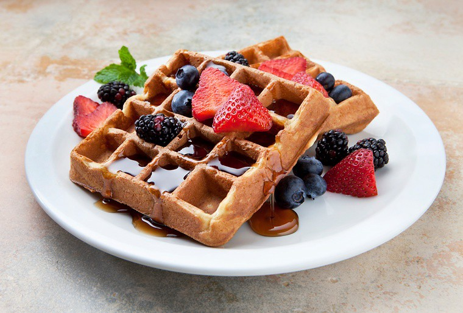

Lazy Waffles

Ingredients:
- 260 grams of plain flour
- 1 tbsp of baking powder
- 1tsp of sea salt flakes
- 1 tbsp of granulated sugar
- 110 grams of unsalted butter (melted)
- 425ml of full cream milk
- 3 eggs lightly beaten
Instructions:
- Preheat the waffle maker at a medium heat setting.
- Mix the flour, baking powder, salt and granulated sugar in a mixing bowl. Add eggs, milk and butter. Whisk everything well.
- Scoop the batter mixture into the waffle maker and cook until it turns golden brown.